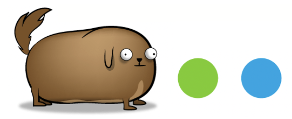

Fatos sobre o Stomatopoda
Informações gerais
- Nome científico: Odontodactylus scyllarus
- Reino: Animalia
- Subfilo: Crustacea
- Classe: Malacostraca
- Subclasse: Hoplocarida
- Ordem: Stomatopoda


Fato 1: A velocidade do soco do stomatopoda chega a 80km/h
Também chamado de camarão mantis, o stomatopoda é um artrópode que possui pouco menos de 12cm, e é um dos animais proporcionalmente mais fortes de todo o mundo. Os aquários normalmente não abrigam camarões mantis porque eles tendem a abater todas as outras criaturas com as quais compartilham um tanque e também porque podem quebrar o vidro do aquário.
As mais de 400 espécies dessa categoria morfológica são conhecidas por sua segunda pata torácica, um membro extremamente forte e desenvolvido que consegue destruir presas com facilidade. O nome camarão mantis vem do inglês louva-deus. As patas dianteiras desse artrópode lembram muito a do inseto comum nos campos.
A força de um soco do camarão mantis é de 1500 newtons ou cerca de 152 quilos, enquanto o soco médio de um ser humano está na casa dos 3300 newtons ou 336 quilos. Ou seja, eles são muito menores que a gente, mas dão socos com a metade da nossa força.

Para colocar isso em perspectiva, se os seres humanos pudessem acelerar nossos braços em 1/10 desse gasto, seríamos capazes de lançar uma bola de beisebol em órbita. Seus membros se movem tão rapidamente que a água ao seu redor ferve em um processo conhecido como supercavitação. Quando essas bolhas de cavitação entram em colapso, produz uma onda de choque submarina que pode matar a presa, mesmo que o camarão mantis erre seu alvo.
A força dessas bolhas em colapso também produz temperaturas na faixa de vários milhares de Kelvins e emite pequenas explosões de luz. Esse efeito é chamado de sonoluminescência. Usando esses "bastões de assassinato", o desmembramento é principalmente como o camarão mantis mata sua presa. Ele esmaga outros animais em pedaços, esmagando caranguejos, moluscos, ostras e polvos até que a delícia comece a esguichar. Seus membros são tão resistentes que os pesquisadores estudam sua estrutura celular para uso no desenvolvimento de armaduras avançadas para tropas de combate.
Segundo a bióloga da Universidade San Jose Maya deVries, a força do soco desse animal é explicável pela fisiologia do animal. “O camarão mantis possui um sistema de acúmulo de energia para "engatilhar" sua pata. Ele possui um sistema de tranca que reserva a energia. Portanto, quando o animal está pronto para atacar, ele contrai seus músculos e libera a tranca. Toda a energia acumulada nos músculos e no exoesqueleto do camarão é liberada e a pata gira à frente com uma aceleração absurda, que chega à 80 quilômetros por hora”, explica ao Oddity Central.
Fato 2: O Stomatopoda possue o mais complexo sistema de visão de cores do mundo animal
Os Stomatopodas enxergam 12 cores primárias, correspondentes aos 12 pigmentos distintos presentes em sua retina. Nossos olhos possuem três tipos desses receptores - que correspondem à luz azul, verde e vermelha -, que nos permitem perceber o espectro de cores que vemos.

Os cães contam com apenas dois tipos de cones (verde e azul), e é por isso que eles veem tons de azul, verde e um pouco de amarelo. Muitos anfíbios, répteis, aves e insetos possuem quatro tipos de cones, o que significa que espécies dessas classes conseguem ver cores que o nosso cérebro é incapaz de processar.
Algumas espécies específicas de borboletas e possivelmente pombos possuem cinco cones de percepção de cor, o que aumenta ainda mais a quantidade de pigmentos que eles são capazes de perceber. Além de ver duas cores para as quais não temos nomes, as borboletas podem ver um espectro enorme de cores que nossos cérebros nem são capazes de processar.

O sistema de visão dos estomatópodes possui doze cones sensíveis à luz e outros quatro que filtram a luz (16 cones no total), o que lhes permite ver cores polarizadas e imagens multiespectrais. Como cada cone pode ver cerca de 100 cores, os estomatópodes são capazes de ver 10(24) cores, ou seja, 1 septilhão de cores. Em comparação, o olho humano vê 10(6) cores, ou seja, 1 milhão de cores apenas. A visão dos estomatópodes é sensível à luz ultravioleta, mas ainda é desconhecido se ela pode distinguir a luz infravermelha.